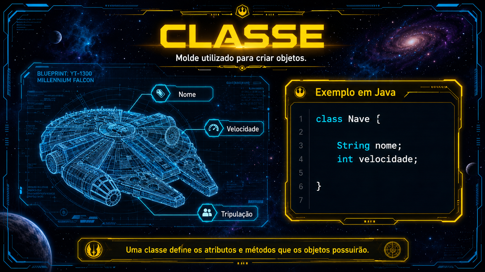
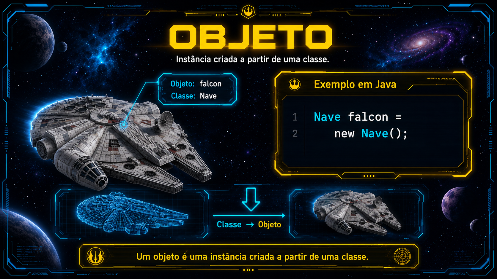
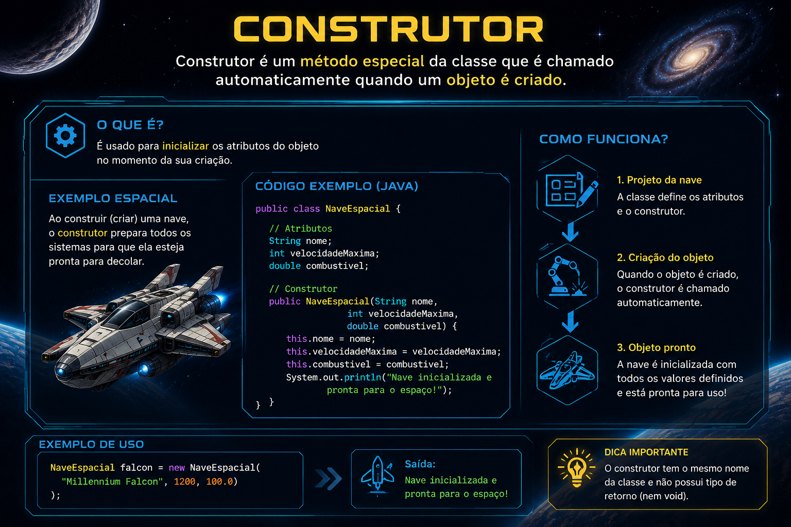
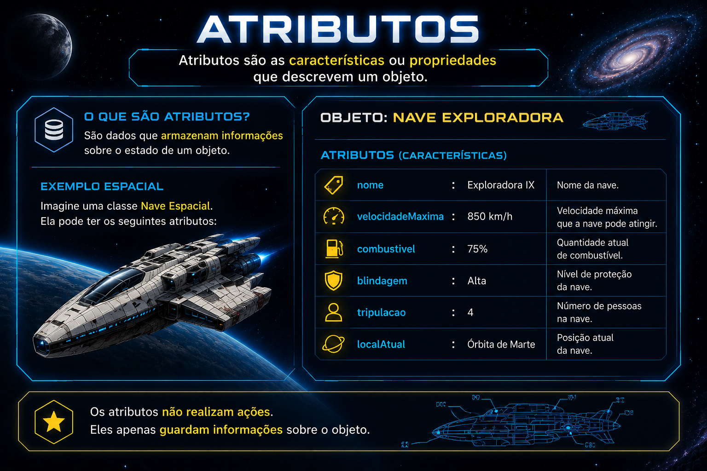
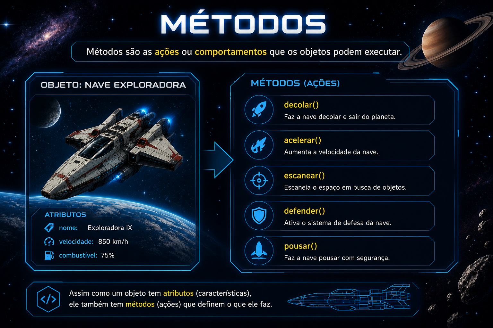
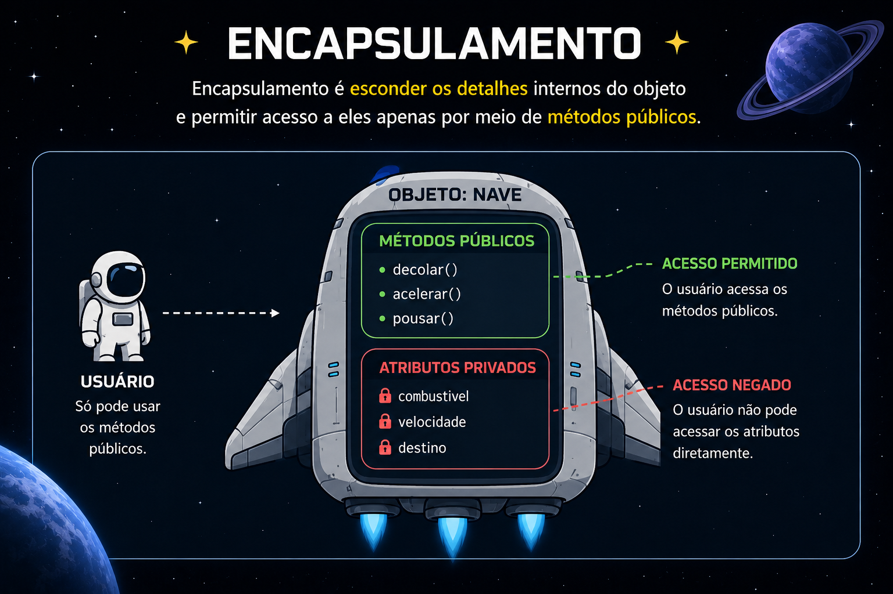
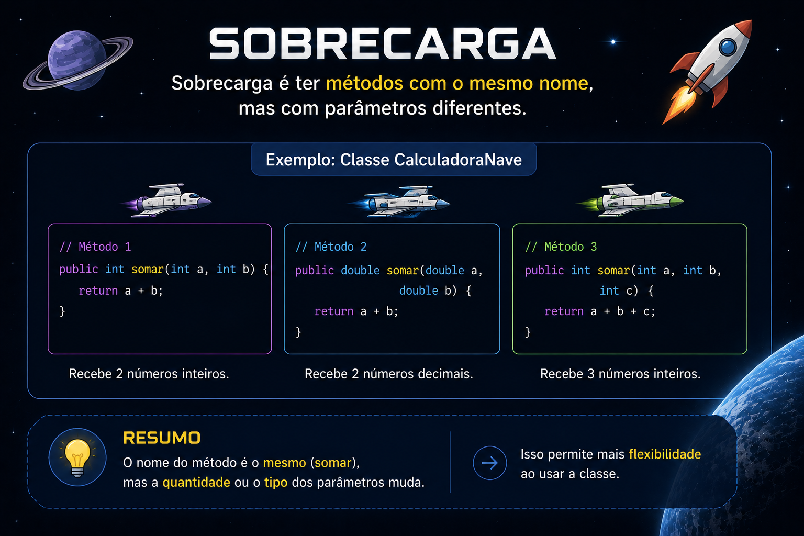

O que é POO
- Paradigma de programação
- Organização do código em objetos
- Reutilização de código
- Facilita a manutenção e evolução do software
Classe
- Modelo ou molde para criar objetos
- Define atributos e métodos
- Exemplo: Classe "Carro" com atributos "cor", "modelo" e método "acelerar()"

Objeto
- Instância de uma classe
- Possui estado (atributos) e comportamento (métodos)
- Exemplo: Objeto "meuCarro" da classe "Carro" com cor "vermelho" e modelo "sedan"

Construtor
- Método especial para inicializar objetos
- Geralmente tem o mesmo nome da classe
- Exemplo: Construtor da classe "Carro" que recebe parâmetros para definir a cor e modelo do carro

Atributos
- Propriedades que definem o estado de um objeto
- Podem ser públicos, privados ou protegidos
- Exemplo: Atributo "cor" da classe "Carro"

Métodos
- Funções que definem o comportamento de um objeto
- Podem ser públicos, privados ou protegidos
- Exemplo: Método "acelerar()" da classe "Carro"

Encapsulamento
- Técnica de ocultar os detalhes de implementação de um objeto
- Permite controlar o acesso aos atributos e métodos
- Exemplo: Usar métodos getters e setters para acessar e modificar atributos

Sobrecarga
- Recursos que permite ter múltiplos métodos com o mesmo nome
- Diferem pelo número ou tipo de parâmetros
- Exemplo: Métodos "calcularArea()" com diferentes parâmetros

Polimorfismo
- Capacidade de um objeto de assumir várias formas
- Permite tratar objetos de diferentes classes através de uma interface comum
- Exemplo: Método "calcularArea()" sendo implementado de forma diferente para diferentes classes